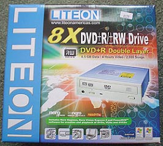
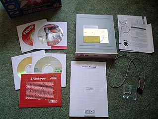
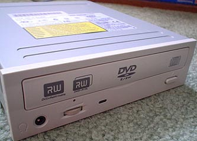

Я был всегда восторжен продукцией Liteon, и вот у них вышла новинка SOHW-832S 8x8 Dual Layer DVD+/-RW Drive Review. Вообще фирма Liteon долгое время лидирует в производстве CD-DVD дисководов, и я думаю ей можно доверять (я не говорю что остальные фирмы производящие дисководы, плохого качества - это лишь моё сугубо личное мнение).

А вот скоростные возможности этого зверя:
- 8X DVD+R, 4X DVD+RWДополнительную информацию, и многое другое вы можете почитать на официальном сайте производителя www.liteonit.com
ATAPI / E-IDE Half-Height internal DVD+R / DVD+RW / DVD+R9 / DVD-R / DVD-RW / DVD-ROM / CD-R / CD-RW / CD-ROM поддерживающие комбинации.
Предусмотрен двойной слой DVD+R9 Функция записи SMART-BURN позволяет избегать буферной ошибки UnderRun Error, автоматически регулирует сочетание strategy и running OPC чтобы обеспечить корректную и качественную запись на диск.
В комплект Liteon SOHW-832S входит всё необходимое для полной установки дисковода. Винты, Audio кабель, IDE шлейф, руководство по эксплуатации и программное обеспечение полностью включены розничным пакетом SOHW-832S - полные версии PowerDVD 5 и Nero OEM Suite 3.

А вот и собственной персоной Liteon 832S.

Я протестировал Liteon 832s против BenQ DW800A 8x DVD+RW Drive и Liteon LTR-48125W 4x DVD+RW Drive. Используя DVD Shrink я скопировал кино 4.5GB в папку на жестком диске. И использовал самую последнюю версию Nero, чтобы записать/прожечь это на DVD и записывал время записи и прожига DVD.
Результаты тестов - "Вот что у меня получилось".Самым быстрым оказался Liteon LTR-48125W, а BenQ отставал почти на 2 минуты.
Полная запись 4,5 GB на DVDЗдесь мы видим запись 8x на первом месте Liteon SOHW-832S способный записывать все 4.5 GB DVD за 10 минут. BenQ Следует тесно за Liteon SOHW-832S около 35 секунд опоздания. LTR-48125w остался в дауне не смотря на то что он отлично читает диски но до записи ему далеко даже до BenQ. Имейте в виду это пока я был не в состоянии приобрести носителя, чтобы тестировать Двойное функциональное назначение Слоя Liteon 832s, 832s - единственный агрегат группы, который поддерживает эту характеристику.
Со временем двойной слой приобретёт популярность, так что если вы возьмете Liteon SOHW-832S то у вас не возникнут проблемы с работой таких болванок, всегда нужно думать на будущее. Двойной Слой даст пользователям способность загружать 8.5 GB данных на диск. Чтение ускоряется в неподвижных остатках новых накопителей 12x, 16x DVD-Rom.